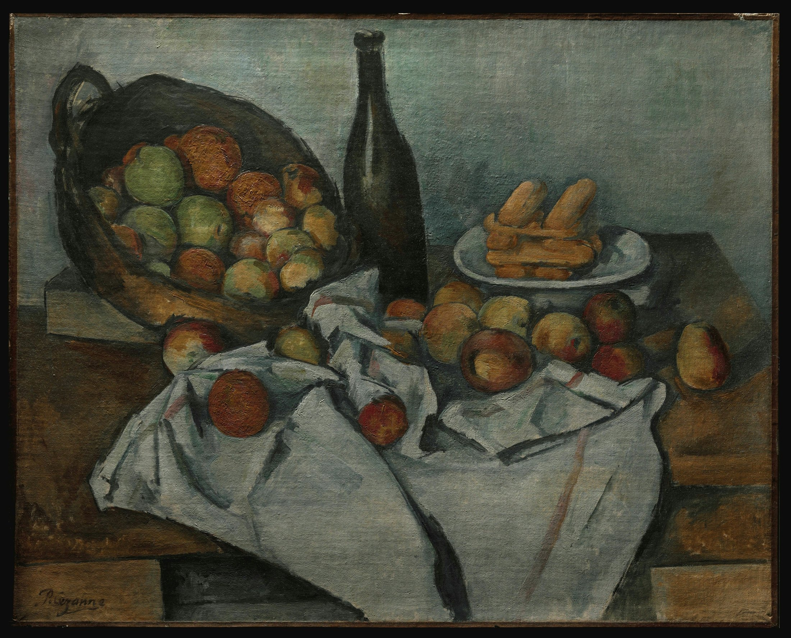

篮口偏正面，盘面偏俯视，瓶身近乎平视。左侧向下坠，右侧向上抬；深色酒瓶像铰链，把两股力扣住。
灰蓝与雾白铺底，锈红—橄榄构成降饱和互补。明暗轴由近黑瓶身与白布建立；果实靠冷暖对比发光。
苹果不是被平滑渐变“抹圆”：黄、红、绿与冷蓝短笔触搭成球体。果实与白布近乎雕塑，桌边和布缘却保持草写般松动。
事实：馆方红外成像显示，断裂桌沿与倾斜瓶身从底稿阶段便在计划中，之后仍有调整。此作约 1893 年完成，是塞尚少数签名作品之一，并参加 1895 年首次个展。
观点：这些歪斜不是世界崩坏，而是画家诚实留下的观看时间。普通苹果不靠故事，只靠被反复看见，便获得庄严。
Paul Cezanne，The Basket of Apples，约 1893，布面油画，65 × 80 cm；芝加哥艺术博物馆，1926.252。图像从馆方数字出版图像服务下载；馆方标记作品及数字媒体为 Public Domain。图片版权归原作者及相关权利人，具体使用请复核来源页与所在法域。赏析为「每日艺术」原创分析。